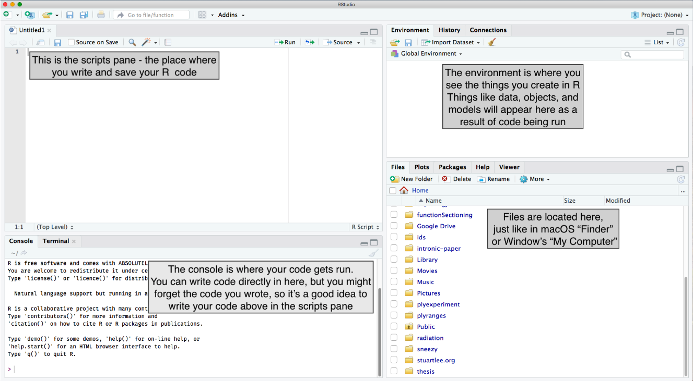
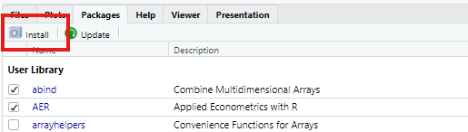
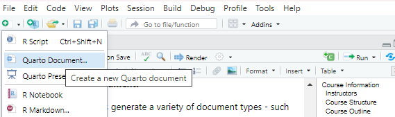
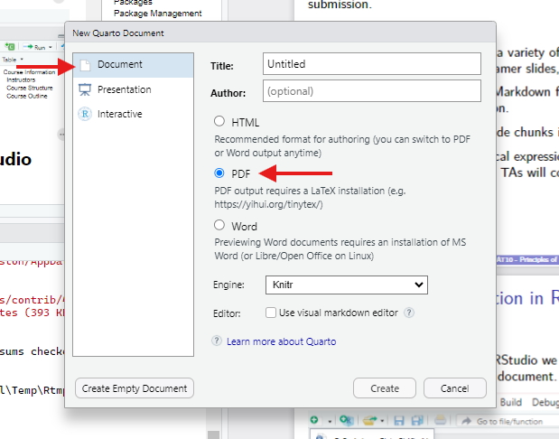
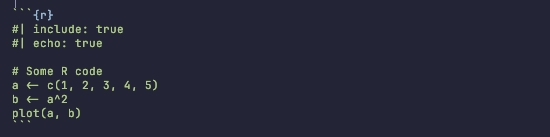
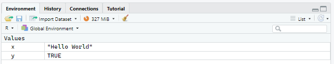

PSTAT 10 Data Science Principles
Lecture 1: Introduction
![]()
August 30, 2026
Introduction
👋 Welcome
Welcome to PSTAT 10 Data Science Principles! 🎉
- Course description: This course introduces students to the fundamentals of programming for data science using
RandSQL. We will cover descriptive statistics, distributions, and graphics inR, as well as relational database management systems, including the relational model, relational algebra, database design principles, and data manipulation usingSQL.
Instructor
- John Inston (Instructor)
- Pronouns: he/him
- 🏢 OH: Wednesday 1:00PM–4:00PM, South Hall Cubicle 5431T
- ✉️ Email: johninston@ucsb.edu
- 🌐 Website: johnrobininston.com
👩🏫 Teaching Staff
Teaching Assistants
I am being assisted this term by the following wonderful teaching assistants:
Abhijit Brahme
- ✉️ Email: abhijitbrahme@umail.ucsb.edu
- 🏢 OH: Thursdays 1PM-3PM on Zoom (link on Canvas)
Siyu Chen
- ✉️ Email: siyu_chen@umail.ucsb.edu
- 🏢 OH: Tuesday 11:00AM-12:00PM on Zoom (link on Canvas)
Communication Guidelines:
- Be respectful and professional in all communications.
- Be patient — allow 24–48 hours for a response to emails.
- Be specific — when asking for help, please provide as much detail as possible.
Course Structure
Grading Structure
- Section attendance — 10%
- Section worksheets — 20% (graded on completion)
- Homework assignments — 40% (graded on correctness)
- Final exam — 30%
Worksheet & Assignment Submissions
- Section worksheets are due via PDF on Canvas at 11:59pm on the following Wednesday / Friday after section (2 days).
- Homework assignments are uploaded to Canvas Tuesday evening and due via PDF on Gradescope at 11:59pm the following Wednesday (8 days).
📝 Final is written in-person for 11AM Thursday September 10th in Theater and Dance West.
✅ Course Outline
The following is our tentative course outline:
Week 1
- Vectors, matrices and arrays
- Functions and control flow
Week 2
- Dataframes and tibbles
- Data manipulation
Week 3
- Statistics
- Probability
Week 4
- Database structure and design
- Basic SQL
Week 5
- More complex SQL
- Data visualization
Week 6
- Review
- Additional topics as time allows
Throughout the course we will be programming in R. In weeks 4 and 5 we will also be using SQL to query relational databases.
⚖️ Academic Integrity
Academic Integrity Statement
By enrolling in this course, you agree to abide by the UCSB Academic Integrity Policy. In short, you are expected to avoid the following dishonest behaviors:
Cheating
Plagiarism
Lying
Unauthorized collaboration
Misusing resources
Any violation of these policies will be reported to the Office of Student Conduct and may result in a failing grade for the course.
✅ Guidelines for this course
🤝 You may collaborate on assignments and worksheets, but always write and submit your own documents.
🤖 The use of AI tools such as ChatGPT, Claude and Gemini is permitted as a learning tool.
🗣️ Communication is key! Please let me know about any mitigating circumstances or deadline conflicts as soon as possible!
R & RStudio
🅁 What is R?
This course will use the programming language R.
- Open-source programming language designed for statistical computing.
- Large collection of community built libraries and resources.
- Tools for computation, data exploration, and visualization.
💻 What is RStudio?
It’s an IDE for R!
Interactive Development Environment
An interactive development environment (IDE) is an application designed to facilitate writing and running code.
In this course we will be using the IDE RStudio, which can be downloaded using the following link:

🖥️ RStudio Interface

RStudio Interface
📜 Scripts & Console
Scripts
- We write code in scripts, which appear in the top left pane:
- Scripts have the file extension
.Rand are used to write code. - They contain only code and comments, and are not used to generate documents.
- Scripts have the file extension
- In your worksheets and assignments we will use Quarto Markdown documents — which can generate PDFs — which will also appear in the top left pane.
- Markdown is a simple formatting syntax for authoring documents.
- Quarto is a tool that allows us to use Markdown to generate documents in a variety of formats, including PDFs, Word documents, and HTML.
Console
- The console in the bottom left pane is where we run code.
- This is also where any error messages for bug-fixing will appear.
- Code written here is not saved and lost when we run it.
🗂️ Environment & Files
Data Environment
- We often need to store objects or data in our working memory.
- Working memory is a temporary storage space for data and objects that we are currently using in our R session.
- If we close RStudio, all objects in working memory will be lost.
- These will appear in the data environment in the top right pane.
Files
- When working in R we work within a working directory.
- A working directory is the folder on our computer where RStudio can save and load files.
- This is shown and changed in the Files tab in the bottom right pane.
📦 Packages
What are packages?
- Often we make our lives easier by using code written by the community for certain tasks — e.g. plot formatting, data manipulation, statistical analysis, etc.
- This code can be found online as packages which we can load and use in our IDE.
- A list of the pre-installed packages can be found in the Packages tab in the bottom right pane.
Common Packages
tidyverse— a collection of packages for data manipulation and visualization.ggplot2— a package for creating complex and customizable plots.dplyr— a package for data manipulation and transformation.tidyr— a package for tidying and reshaping data.
Shiny— a package for creating interactive web applications.
🔧 Package Management
Package Management Functions
The following functions are used to manage packages in R:
Installing
To install a package (e.g. cowsay) use the install.packages() function:
The package should now appear in the Packages tab. To use functions from the package we load them using the library() function:
🔧 Package Management (Alternative)
Manual Alternative
Helpfully, R also has a manual library management tool which allows us to:
- Manually install packages using the button highlighted below.
- Select which libraries to load or unload with a check box.

Quarto Documents
📝 Quarto Basics
In this course you will be required to use Quarto Markdown documents to generate PDFs for submission.
What is a Quarto Markdown document?
- Quarto documents generate a variety of document types — such as PDFs, Word documents, PowerPoints, Beamer slides, HTML documents, etc. — in RStudio.
- You can identify a Quarto document by the file extension
.qmd.
- You can identify a Quarto document by the file extension
- They use a language called Markdown for formatting.
- Allow you to add and run code chunks inside the document.
- Code chunks are sections of code that can be run in the document, and the output can be displayed in the document.
- Code can be written in a variety of programming languages, including R, Python, and SQL.
- Allow you to use mathematical expressions written using LaTeX.
f(x,y) = \frac{1}{2\pi\sigma^2} e^{-\frac{x^2 + y^2}{2\sigma^2}}.\[ f(x,y) = \frac{1}{2\pi\sigma^2} e^{-\frac{x^2 + y^2}{2\sigma^2}}. \]
📝 Quarto in RStudio
To create a Quarto document in RStudio we use the new document button in the top left corner and select Quarto document.

New Quarto Document
📝 Quarto Documents
Then you will be met with the following pop-up menu asking you to specify the document type.

From here you can specify you want a PDF document and give your document a title and author.
📚 Quarto Syntax
Writing in Markdown
- Headings are created using
#symbols, with more#symbols indicating a lower level heading. - Lists are created using
-or*symbols, with indentation indicating sub-lists. - Mathematical expressions are created using LaTeX syntax, with inline expressions enclosed in
$symbols and block expressions enclosed in$$symbols.
Adding Code Chunks
- Code chunks are created using three backticks followed by the language name (e.g.
rfor R) and a set of curly braces.

Rendering Documents
What are YAMLs?
- YAMLs are a way to specify document metadata and options in Quarto documents.
- They are written at the top of the document and enclosed in
---symbols. - They can specify options such as the document title, author, date, output format, and code chunk options.
- They are written at the top of the document and enclosed in
Rendering PDFs
- Think of the quarto document as a recipe for generating a PDF document. To generate the PDF we use the Render button in the top left corner of RStudio.
- Your TAs will help you with the details of Quarto’s syntax.
- You can find a template assignment Quarto document with the generated PDF on Canvas.
- You can also find further guidance on Quarto syntax in the following post on my website.

Programming Concepts
🧮 Calculations
Simple Calculations
Fundamentally, R is a calculator allowing you to perform a wide variety of mathematical computations.
[1] 11[1] 1[1] 8[1] 2[1] 1024[1] 7.389056[1] 2.197225[1] 3[1] 8📌 The use of # has made the text following the computations into a comment, which is not read as code.
Order of Operations
- R follows the standard order of operations (PEMDAS) when evaluating expressions.
❓ Help Function
How to ask for help!
- One of my most used functions in R is the
help()function or the?function.- With this function you can ask R’s built-in code documentation reader to provide information on how a specific function works.
- For example, for help on the function
sqrt()write the following in your console:
📌 Make sure not to include these functions in your written documents.
💪 Exercise — R Calculations
02:00
Spend a couple of minutes evaluating the following expressions in R:
Problem 1
\[ \frac{\log_2(256)+2^3}{4^2 - \sqrt{64}}. \]
Problem 2
\[ \exp(4)\times56(\ln(7)-3^3) \]
Hint: Use help() to look up the log, log2 and exp functions.
🔢 Data Types
Below is a list of most important R datatypes:
- Numeric
- any number (integer or decimal) is a numeric value.
- Integer
- any whole number declared using an
Lsuffix.
- any whole number declared using an
- Character
- any letter or number enclosed in either single quotes (
' ') or double quotes (" ") becomes a character. - A sequential collection of characters forms a string — this is not a specific datatype in R — e.g.
"2+3*4","alphabet".
- any letter or number enclosed in either single quotes (
- Logical
- TRUE / FALSE output of some logical query.
🔣 Logic
Logical Operators
!— negation operator, returns the opposite of a logical value.&— and operator, returns TRUE if both logical values are TRUE.&&— short-circuit and operator, returns TRUE if both logical values are TRUE, but only evaluates the first element of each vector.|— or operator, returns TRUE if at least one logical value is TRUE.||— short-circuit or operator, returns TRUE if at least one logical value is TRUE, but only evaluates the first element of each vector.xor()— exclusive or operator, returns TRUE if exactly one logical value is TRUE.
Comparison Symbols
==— Equal to!=— Not equal to>/<— Greater / less than>=/<=— Greater / less than or equal to
💪 Exercise — Logic
02:00
What will the following logical queries return?
5 > 1010 <= 1013 != 12"Hello" == "Hello""Hello" <= "Hell""Goodbye" != "Hello""Hello" != "Hello" | 5 < 104 <= 2 & 5 <= 123 < 5 < 7
Spend 2 minutes evaluating the examples above in R and check your answers.
📌 9 gives an error because we can’t combine logical expressions without using either & or |.
✅ Solution — Logic
[1] FALSE[1] TRUE[1] TRUE[1] TRUE➡️ Assignment Operator
How to assign values to objects
- Throughout this course the most frequently used operator will be the assignment operator
<-- Assigns some value (of any datatype) to an object.
- The object can then be used in subsequent calculations or code.
Notice that when you run the code above you receive no output, but the objects will have appeared in your data environment (top right tab).

🖨️ Print Function
How to display output
- The
print()function is used to display the value of an object in the console.- Printing is incredibly useful when writing scripts or functions, as it allows us to see the output of our code and debug any errors that may arise.
Pasting output together
- Some functions allow us to print more complex outputs, such as the
paste()function which allows us to concatenate strings and objects together.
✅ Good Practices
📖 Make sure your code is easy to read — both for graders and for your own error checking — by documenting with comments and using good structure (such as indentation).
🔤 When naming objects in R keep in mind the following conventions:
- Letters, digits, underscores, and dots can all be used.
- Object names cannot start with a digit or underscore.
- Avoid starting object names with dots (doing so has special meaning).
- Object names are case sensitive.
- Use descriptive, logical, and efficient object names.
🔁 Avoid repeating yourself (DRY) — write a function for any code you find yourself copy-pasting more than once (we will cover functions in a later lecture).
📝 Test and debug incrementally — run and check your code in small pieces as you write it, rather than all at once, so errors are easier to catch and fix.
💾 Save your work often!
Summary
✅ Topics Covered
- R and RStudio
- Quarto document generation
- Packages
- Calculations in R
- Datatypes
- Assignment operators
📅 Next Class
- Data structures
- Filtering, recycling & sorting
- Vectorization